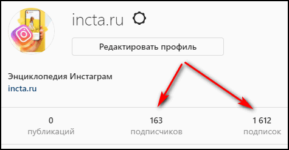
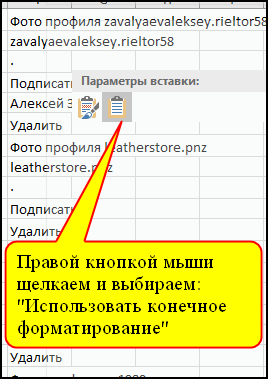
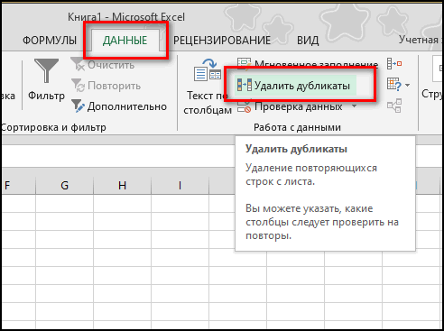
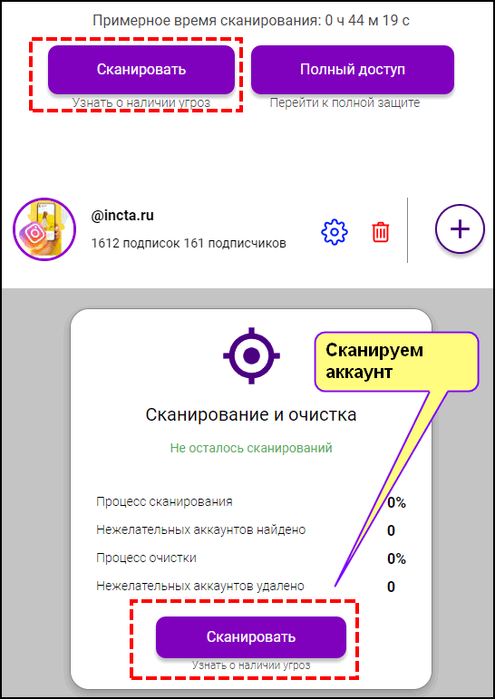
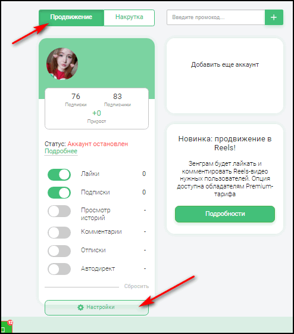
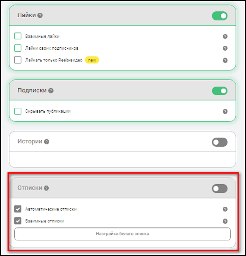
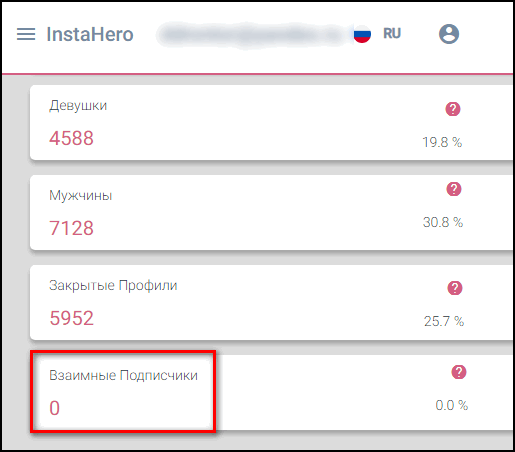
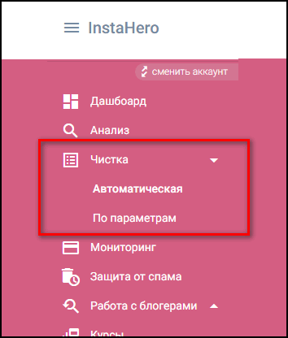

Как посмотреть и отписаться от невзаимных подписчиков в Инстаграм

Отписка от невзаимных подписчиков в Инстаграме* необходима, если владелец профиля планирует продвигать свои услуги, сформировать базу клиентов или просто фанатов, которые будут активно поддерживать контент. Перечень подписок, которые не добавились взаимно, может превышать 10 000, если аккаунт крупный.
Невзаимные подписчики в Инстаграме*: как определить
Отписка от невзаимных подписчиков в Инстаграме* начинается с того, что владельцу блога нужно создать перечень аккаунтов и постепенно отписываться. Это можно сделать двумя способами:
- самостоятельно. Проверив вручную всех подписчиков;
- через онлайн-сервисы. Проще и быстрее, к тому же есть автоматическое удаление.
Если выбрать первый вариант, то владельцу достаточно составить список своих подписок и такой же по подписчикам. Далее, две группы сравнивают и находятся аккаунты, которые не вошли в перечень фанатов.
Используя сервисы, нужно обращать внимание на тарифный план. Некоторые из площадок предлагают бесплатный пробный период, который поможет удалить лишь часть фейков (если аккаунт крупный) или всех (если подписчиков мало).
Невзаимные подписки – это зачастую страницы, которые подписались из-за массфолловинга, от них можно безопасно отписаться в автоматическом режиме. Изначально такой пользователь оформляет подписку, а после, когда отправили взаимный запрос, отписывается. Таким способом набирают новую и «живую» аудиторию, которая соответствует правилам продвижения.
Через список своих поклонников
Выбирать самостоятельно, кто не подписался на страницу – сложно и подходит только в том случае, если в блоге менее 5000 подписчиков. Как самостоятельно провести анализ:
- скопировать перечень подписчиков, посмотреть вручную;
- воспользоваться таблицами Excel и условиями форматирования «Одинаковые значения».
Последний вариант можно выполнить после того, как владелец профиля уже перенес в таблицу никнеймы. Это проще сделать через компьютерную версию:
- Зайти в Инстаграм* через веб-формат – авторизоваться.

- Перейти в раздел: «Подписчики» - открыть новую таблицу в Excel.
- Скопировать никнеймы – вставить в столбец.

Листать и копировать до тех пор, пока не будут перенесены все данные. Те же действия нужно повторить со списком «Подписки».
Что делать дальше:
- Открыть Excel с перенесенными значениями.
- Выделить столбец с данными о подписчиках и подписках.
- Сверху раздел: «Данные» - Работа с данными.

- Удалить дубликаты – подтвердить.
Теперь появится перечень тех ников, которые не попали в список взаимных подписок. Такой вариант актуален, если владелец страницы подписывается на всех фанатов.
SpamGuard - отписка онлайн
С помощью сервиса SpamGuard можно отписаться от невзаимных аккаунтов. Пользователю достаточно запустить сканирование, чтобы проверить список неподходящих подписчиков. Возможность сортировки подписчиков: Боты, Коммерческие аккаунты, Невзаимные аккаунты, Неактивные аккаунты, Иностранцы и т.д. позволяет сортировать и точечно удалять не взаимных фолловеров. Как работает:
- Зайти в сервис СпамГуард – выбрать: «Начать сканирование».
- Добавить аккаунт – указать свой никнейм.
- Прикрепить страницу – запустить проверку.

Чтобы выполнить первый анализ, владельцу страницы нужно указать адрес электронной почты. Можно использовать любой, даже тот который не соответствует прикрепленному в Инстаграме*.
Подходит для средних и крупных аккаунтов, которые ведут блоги или магазины! При подключении полного тарифа, владелец получает постоянную защиту страницы от ботов, невзаимных подписчиков. Работает автоматически: не придется самостоятельно запускать процедуру удаления. Но в демонстрационном режиме можно опробовать проверку и посмотреть, какое количество фанатов не оформили взаимную подписку.
Zengram: если подписаны невзаимно
В сервисе Zengram можно отписаться от всех, кто не оформил подписку, воспользовавшись встроенной функцией. Как запустить отписку от невзаимных подписчиков:
- Зайти в сервис Зенграм – выбрать: «Регистрация».
- Указать адрес электронной почты и придумать пароль.

- Выбрать вариант: «Подключить аккаунт» - в боковом меню функция: «Продвижение».
- Снизу: «Настройка» - Отписка.

- От невазимных – подтвердить и начать удаление.
В сервисе Zengram можно настроить постоянный мониторинг аккаунта с проверкой по новым подписчикам, ботам и фейкам.
Но его основная направленность – продвижение страницы и организация массового фолловинга, лайков и комментариев. Если у владельца крупный блог, с более 100 000 подписчиков, Zengram поможет в постоянной аналитике и рассылке сообщений для привлечения клиентов.
Используем InstaHero, чтобы удалить не взаимных
Сервис InstaHero направлен на защиту страницы и удаление ботов и фейков, аналитику. С его помощью пользователь может удалять ненужных или невзаимных подписчиков.
Есть бесплатный тестовый тариф при регистрации с нашего сайта по ссылке выше.? Как определить и удалить:
- Подключить свой профиль из Инстаграма*.
- Выбрать раздел: «Анализ» - Взаимные подписчики.

Посмотреть процентное соотношение – Чистка.
- По параметрам – выбрать: «Не подписаны взаимно».
- Начать удаление.
В InstaHero можно выставить время, когда сервис будет очищать страницу. Это необходимо для того, чтобы страницу не заблокировали за автоматические действия.
Чтобы выполнить чистку, владельцу нужно указать свои регистрационные данные. Выполнить подобное действие на странице, к которой нет доступа, нельзя. Но можно посмотреть, какое процентное соотношение взаимных подписок у конкурентов.
Зачем удалять невзаимных подписчиков в Инстаграме*
Основная проблема, почему удаляют невзаимных подписчиков – в отсутствии активности. Так, пользователь который подписался из-за массового фолловинга, вряд ли оставит комментарий или поставит лайк. Это влияет не только на число взаимодействий с контентом, но и возможно в дальнейшем продвигать контент, составить предполагаемую целевую аудиторию. Другие причины, почему невзаимные подписчики мешают:
- владелец блога засоряет перечень своих подписок, получает ненужные публикации в Ленту;
- количество подписок может превышать подписчиков. И такой показатель нередко свидетельствует о том, что блог неактивен или необходим для массовых подписок;
- влияют на продвижение. Составить предполагаемую ЦА становится сложнее из-за того, что половина может быть добавлена из разных стран, городов.
Владелец профиля должен внимательно отслеживать всех фанатов, регулярно переходя в перечень. Это необходимо для того, чтобы просматривать данные конкурентов и своевременно убирать тех, кто может просто следить за страницей.